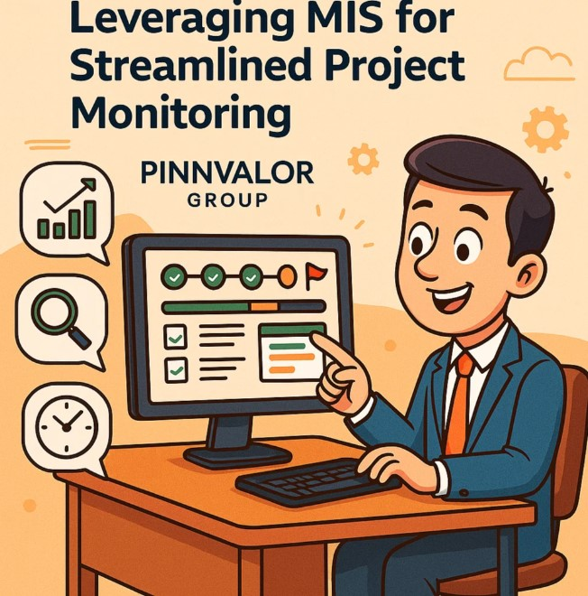

Milestone Mastery: Leveraging MIS for Streamlined Project Monitoring
In an era where project success is measured not just by outcomes but by timeliness, milestone tracking has become a strategic necessity. Missing a milestone can set off a chain of delays, overspend, or even project failure. To stay ahead, organizations are turning to Management Information Systems (MIS)—not just for reporting, but as a powerful control mechanism for project monitoring.
Is your project monitoring reactive—or driven by real-time insights through MIS?
When you embed MIS into your project workflow, you don’t just monitor progress— you drive it with data, visibility, and control.
üîç Understanding Milestones in Project Management
Milestones are key checkpoints that signify critical progress within a project lifecycle. Think of them as anchor points—such as completion of planning, kickoff of development, or final testing sign-off—that ensure the project is on track.
But tracking milestones effectively requires more than spreadsheets and status meetings. It demands real-time visibility, accurate data, and proactive alerts—all of which are the core strengths of a well-designed MIS.
üìä What Is MIS and Why It Matters in Project Monitoring
A Management Information System (MIS) is a structured framework that collects, processes, and presents data for decision-making. When applied to project management, MIS helps:
- Monitor milestone completion
- Visualize progress against timelines
- Identify bottlenecks early
- Allocate resources efficiently
MIS converts data into insight, empowering project managers and leadership to intervene before risks materialize.
⚙️ Key Ways MIS Streamlines Milestone Tracking
✅ 1. Centralized Data Access and Visibility
MIS integrates data from multiple sources (HR, finance, operations) into a single dashboard, giving a 360-degree view of project progress:
- Who is responsible for what
- Which milestones are lagging
- How current status compares to the original plan
This transparency eliminates miscommunication and aligns stakeholders at every level.
⏱ 2. Real-Time Monitoring and Alerts
Time is everything in project execution. MIS automates the process of:
- Sending alerts for missed or upcoming milestones
- Flagging deviations from baseline schedules
- Notifying relevant teams for corrective action
This real-time approach ensures nothing falls through the cracks.
üìà 3. Data-Driven Forecasting and Scenario Analysis
With MIS, you’re not just reacting—you’re anticipating. It supports:
- Predictive analytics to forecast delays
- "What-if" scenarios to evaluate potential impacts
- Timeline compression analysis for faster delivery
This makes project planning more resilient and adaptive.
üß© 4. Integration with Project Methodologies
Whether you work with Agile sprints, Waterfall stages, or hybrid models, MIS can be customized to:
- Track sprint-level milestones
- Log retrospective feedback
- Report on incremental progress in complex portfolios
It offers methodology-neutral support with flexible reporting formats.
üìé 5. Better Stakeholder Reporting and Governance
MIS enhances communication by:
- Generating automated milestone reports
- Supporting board-level updates and audit trails
- Providing evidence-based insights to leadership
The result? Stronger accountability and faster decision-making.
üöÄ Strategic Benefits of MIS in Milestone Tracking
When fully embedded into the project ecosystem, MIS delivers tangible business benefits:
- Higher on-time delivery rate
- Improved cost management
- Streamlined team coordination
- Enhanced client and stakeholder trust
It becomes the central nervous system of project execution.
üèÅ Conclusion: Milestones Are Only as Strong as Your Monitoring System
In today’s dynamic business landscape, meeting project milestones is no longer optional—it’s essential. And to do that effectively, you need more than intuition or static reports. You need MIS-powered visibility, accuracy, and foresight.